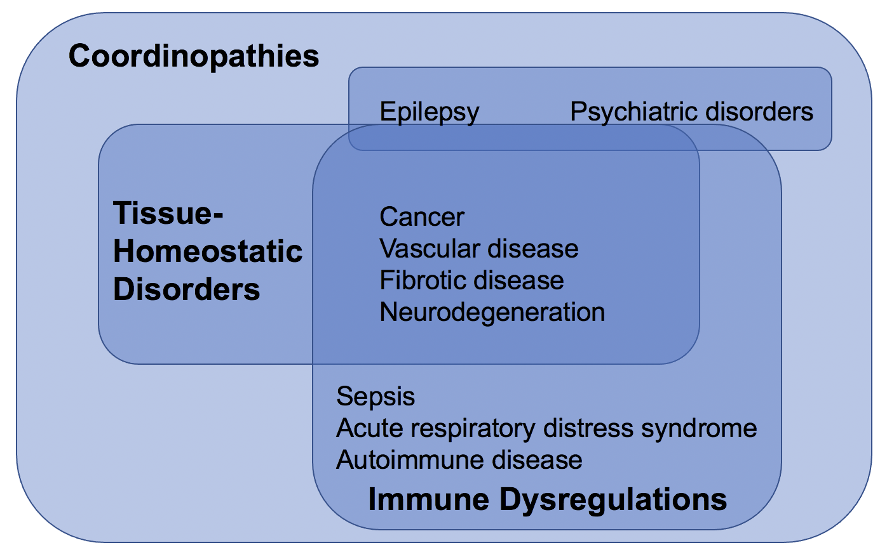

Coordination and coordinopathy
Some diseases are simple, or at least conceal their complexity. Localized bacterial infections, for example: we know that the bacteria cause the disease, we know that clearing the bacteria will resolve the disease, and we know that once the bacteria are cleared the disease will not come back. Simple diseases often respond to small-molecule treatments, like antibiotics.
Other diseases are complex: diverse and cryptic in mechanism, presentation, and progression. They may not result from a single infectious agent, mutation, or injury. They are often hard to treat and hard to reverse. Examples of complex diseases include cancer, sepsis, acute respiratory distress syndrome, epilepsy, vascular diseases, autoimmune diseases, fibrotic diseases, neurodegenerative diseases, and psychiatric disorders.
At first glance, this list is too sprawling to have much in common. Yet there are crucial commonalities. The repeated involvement of nervous, immune, and developmental processes is no coincidence. Complex diseases, rather than resulting from an external cause, are dysregulations of the complex systems that keep us healthy. And complexity in health means something more precise than complexity in disease: it means multicellular coordination and control. Narrowing the scope of the problem expands our scope of treatment approaches beyond what pathways we target (though this is still a key question!) to include when, where, and in what combinations we target those pathways.
In order to be successful, these new approaches should lead to specific treatments that target specific pathways. Fortunately, there are commonalities in specifics as well. I think it is reasonable to describe the complex diseases I’ve listed above in three overlapping categories: immune dysfunction, tissue-homeostatic disorders, and multicellular coordination disorders (or simply coordinopathies). These are provisional categories – the boundaries between immune and tissue-homeostatic function are porous, and there are roles for immune and tissue-homeostatic function in epilepsy and psychiatric disorders. So it seems likely to me that over time, we will have better names for these things. Even as our understanding of the basic science continues to develop, however, there is computational and translational progress to be made in treating complex diseases.
